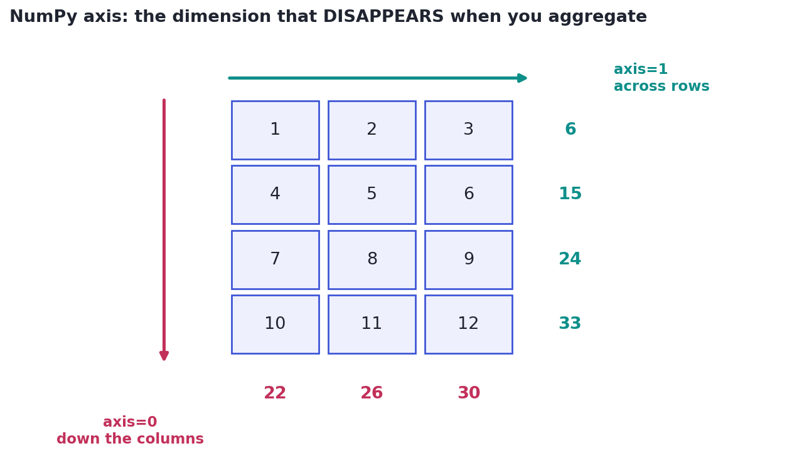

NumPy Deeper: Random, Axes & Reshaping
Aggregate along axes, generate reproducible random data, and reshape and transform arrays.
Lesson 2.5 taught you to think in arrays. This lesson adds the array tools you'll actually reach for every week: aggregating along a chosen direction, generating random data for simulations (the engine behind every Track 1 demo), and reshaping and transforming arrays. These are the moves behind Pandas, scikit-learn, and the statistics you've already learned — so they pay off everywhere.
Concept · the one that confuses everyoneAggregating along an axis
A 2-D array has two directions, and aggregations like .sum() and .mean() take an axis argument to say which way to collapse. The mnemonic that finally makes it stick: axis is the dimension that disappears. M.sum(axis=0) collapses the rows, leaving one value per column (a column total). M.sum(axis=1) collapses the columns, leaving one value per row. With no axis, it collapses everything to a single number.

Concept · simulation fuelRandom numbers (done right)
Random data drives simulations, sampling, shuffling, and the resampling behind the bootstrap (Lesson 1.8). The modern way is a generator: rng = np.random.default_rng(seed), then draw from it — rng.normal(mean, sd, size), rng.uniform(...), rng.integers(low, high, size), rng.choice(options, size). Passing a seed makes the 'random' numbers reproducible: the same seed gives the same sequence every run, which is essential for results others can verify (and why every example in this course seeds its generator).
ConceptReshaping and handy functions
A few more array tools you'll use constantly:
- reshape rearranges the same data into a new shape:
a.reshape(3, 4)(use-1to let NumPy infer a dimension). - where is a vectorized if/else:
np.where(a > 0, "pos", "neg"). - clip caps values to a range:
np.clip(a, 0, 100)(winsorizing, Lesson 3.7). np.unique,np.concatenate,np.argmax/np.argsortround out the toolkit.
Worked exampleArrays in anger
Generate reproducible random data, aggregate it by axis, and transform it with where and clip — the array operations behind real analysis code.
import numpy as np
rng = np.random.default_rng(0) # seeded -> reproducible
M = rng.integers(0, 10, size=(3, 4)) # a 3x4 array of random ints 0-9
print(M)
print("column means (axis=0):", M.mean(axis=0).round(1)) # one per column
print("row sums (axis=1):", M.sum(axis=1)) # one per row
print("grand total (no axis):", M.sum())
# Vectorized transforms — no loops
print("flag >=5 :\n", np.where(M >= 5, 1, 0)) # if/else over the array
print("clipped 2..7:\n", np.clip(M, 2, 7)) # cap values into a range[[8 6 5 2] [3 0 0 0] [1 8 6 9]] column means (axis=0): [4. 4.7 3.7 3.7] row sums (axis=1): [21 3 24] grand total (no axis): 48 flag >=5 : [[1 1 1 0] [0 0 0 0] [0 1 1 1]] clipped 2..7: [[7 6 5 2] [3 2 2 2] [2 7 6 7]]
Every line operates on the whole array: aggregations choose a direction with axis, and where/clip transform element-wise without a single loop. This is the array fluency that makes Pandas (a labeled layer over NumPy) feel natural — df.mean(axis=0) is this exact idea on a DataFrame.
★ Key points to remember
axisis the dimension that disappears:axis=0→ per-column result,axis=1→ per-row result, no axis → one number.- Generate randomness with
rng = np.random.default_rng(seed); a seed makes results reproducible. - Draw with
rng.normal/uniform/integers/choice; this fuels simulation, sampling, and the bootstrap. - reshape rearranges data (use
-1to infer a dim); where is vectorized if/else; clip caps to a range. - These NumPy operations are exactly what Pandas runs under the hood — the same
axisidea applies to DataFrames.
M of shape (rows=5, cols=3), what does M.sum(axis=0) return?np.random.default_rng(seed)?np.where(scores >= 60, "pass", "fail") produce?◆ Practice▸
sales with shape (stores=4, months=12). Write expressions for (a) each store's yearly total and (b) the average across stores for each month.Show solution & reasoning
store_totals = sales.sum(axis=1) # collapse months -> one per store (4 values)
month_avgs = sales.mean(axis=0) # collapse stores -> one per month (12 values)Per store total sums across the 12 months, so collapse axis=1 (months disappear). Per month average collapses the 4 stores, so axis=0 (stores disappear). Remember: the named axis is the one that vanishes.
Show solution & reasoning
rng = np.random.default_rng(42)
sample = rng.normal(50, 8, size=1000)Create a seeded generator (so the draw is reproducible), then rng.normal(mean, sd, size) gives 1,000 values centered at 50 with spread 8 — exactly the kind of synthetic data the Track 1 simulations used to demonstrate the CLT and sampling.
◎ Deep dive: standardization via broadcasting, views vs. copies, and the modern RNG▸
Broadcasting, revisited. The axis idea and broadcasting (Lesson 2.5) team up constantly. To standardize a table column-by-column — subtract each column's mean and divide by its SD — you write (M - M.mean(axis=0)) / M.std(axis=0) in one line: the per-column statistics (shape (cols,)) broadcast across every row. This single expression is the z-score standardization that scikit-learn's StandardScaler performs, and a preview of feature scaling in Track 6.
Views vs. copies, and why reshape is cheap. reshape usually returns a view — the same data seen with a different shape, no copying — which is why it's nearly free even on huge arrays. Slicing is also a view, so modifying a slice can change the original (the array version of the reference trap from Lesson 2.1). When you need an independent array, call .copy(). Understanding views explains both NumPy's speed and its occasional 'why did my original change?' surprises.
The legacy random API. You'll see older code using np.random.seed(0) and np.random.rand(...) (the global, legacy interface). It still works, but the modern default_rng() generator is preferred: it's faster, has better statistical properties, and avoids the hidden-global-state bugs of the old API. Recognize the old style in tutorials, but write the new one.
The classic NumPy interview check is axis=0 vs axis=1 — answer with the 'dimension that disappears' rule and a concrete example (column means are axis=0). Mentioning seeded generators for reproducibility, and that Pandas runs NumPy underneath (so the same axis logic applies to DataFrames), shows you understand the foundation, not just the surface.